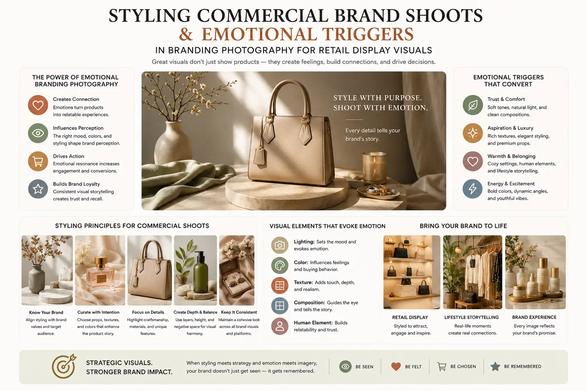

How Selecting the Right Background Color Schemes Changes E-commerce Purchase Behavior
The Invisible Variable That Determines Whether Your Product Image Converts
Every element of a product image is scrutinised during production — the product's angle, the lighting quality, the styling details, the resolution, the colour accuracy of the product itself. But one element is treated, by most brands and most photographers, as a non-decision: the background. White. Always white. White because the marketplace requires it. White because it is "clean." White because no one has questioned whether it is actually the most effective choice.
The background colour of a product photograph is not a neutral container — it is an active psychological variable that affects the viewer's emotional response to the product, their perception of its value, their visual engagement with the image, and ultimately their likelihood of making a purchase. Studio photography color psychology demonstrates that changing the background colour of an otherwise identical product image produces measurably different responses in viewer perception, emotional engagement, and purchase intent — changes that translate directly into conversion rate differences on e-commerce platforms.
E-commerce catalog color strategy — the deliberate, data-informed selection of background colours for product photography based on the specific psychological responses each colour produces in the target audience — is one of the highest-return, lowest-cost optimisation opportunities available to any e-commerce brand. The product stays the same. The photography stays the same. Only the background changes. And the conversion rate shifts.
The Psychology of Background Colour: How Surroundings Shape Perception
Studio photography color psychology operates through a set of perceptual and emotional mechanisms that are well-documented in colour science and consumer psychology research — mechanisms that activate automatically, below conscious awareness, and influence the viewer's response to the product before their analytical mind has engaged.
- Simultaneous contrast: the background changes the product's apparent colour. The human visual system does not perceive colours in isolation — it perceives them relative to their surrounding colours. A phenomenon known as simultaneous contrast causes the perceived colour of an object to shift based on the colour of its background. A warm-toned product on a cool blue-grey background appears warmer and more saturated than the same product on a warm cream background. A light-coloured product on a dark background appears lighter and more luminous than the same product on a white background. This means that the background colour is not separate from the product's visual identity — it is part of it. Visual merchandising color theory uses simultaneous contrast deliberately to make products appear more vivid, more saturated, and more visually appealing than they would in isolation.
- Colour-emotion associations: the background creates the emotional context. Colour-emotion associations — the automatic emotional responses that specific colours trigger — are among the most robust findings in consumer psychology. Warm colours (reds, oranges, warm yellows) produce arousal, energy, and urgency. Cool colours (blues, greens, soft purples) produce calm, trust, and contemplation. Neutral tones (greys, taupes, warm whites) produce sophistication, restraint, and premium perception. When these colours are used as product photography backgrounds, they create an emotional context that the viewer automatically transfers to the product itself — a phenomenon known as affect transfer. The product on the warm background feels energetic. The product on the cool background feels trustworthy. The product on the neutral background feels premium. The product itself has not changed. The viewer's emotional relationship with it has.
- Value perception through colour associations. Specific background colours carry automatic associations with specific retail and cultural environments — and these associations directly influence the viewer's perception of the product's value and market positioning. Dark, rich backgrounds (deep charcoal, navy, dark forest green) carry associations with luxury retail environments and high-end display — positioning the product as premium. Bright white backgrounds carry associations with clinical, informational, and mass-market environments — positioning the product as accessible and functional. Textured natural backgrounds (raw linen, wood, stone) carry associations with artisanal, handcrafted, and authentic production — positioning the product as genuine and craft-made. Emotional triggers in branding photography operate through these automatic associations, positioning the product within a specific value tier through the background's cultural signals alone.
- Attention and visual salience through contrast. The most fundamental function of background colour is to create visual contrast between the product and its environment — and the degree of contrast directly affects the product's visual salience (how immediately and powerfully it captures the viewer's attention). Maximum contrast (dark product on light background, or light product on dark background) produces maximum visual salience. Moderate contrast produces a more subtle, integrated visual experience. The optimal contrast level depends on the commercial objective: high-intent catalog colors for marketplace listings where the product must be instantly identifiable typically require maximum contrast, while brand-owned product pages where emotional engagement is the priority may benefit from moderate contrast that creates a more immersive, less clinical visual experience.
Conversion Rate Impact
Background colour changes in product photography produce measurable conversion rate differences — typically 5–15% variation between colour options for the same product — because the background affects three conversion-critical variables simultaneously: visual attention (whether the viewer stops to look), emotional engagement (how the viewer feels about the product), and perceived value (whether the viewer considers the price justified).
Brand Positioning Signal
Background colour is the fastest-processing brand positioning signal in a product image — the viewer's visual system processes the background's colour and its associated cultural meaning before it processes the product's details. A strategically selected background colour positions the product within the correct market tier before the viewer has read the product name or price.
Catalog Visual Coherence
A consistent background colour strategy across an entire product catalog creates visual coherence that functions as a brand signature — the viewer scrolling through a catalog recognises the brand's visual identity through its background colour palette, building familiarity and trust that accumulates across multiple product views.
Low-Cost Optimisation
Background colour is one of the lowest-cost, highest-return variables in product photography optimisation. Changing the background colour requires no change to the product, no restyling, no relighting, and no new photography — only a backdrop change or a post-production colour adjustment — making it the most accessible A/B testing variable available for conversion rate optimisation.
High-Conversion Backdrop Design: Colour Strategies by Product Category
High-conversion backdrop design is category-specific — the background colour that maximises conversion for a luxury watch is different from the colour that maximises conversion for a children's toy, because the emotional drivers of purchase differ across categories and the background must amplify the specific emotional response that drives conversion in each category.
Luxury and Premium Products
- Deep charcoal and matte black — communicates exclusivity, premium positioning, and the visual language of luxury retail display
- Rich navy and dark teal — communicates heritage, depth, and sophisticated taste without the severity of pure black
- Warm dark brown and espresso — communicates warmth, natural luxury, and artisanal craftsmanship
- Muted gold and champagne tones — communicates opulence with restraint, appropriate for jewellery and accessories
Beauty, Skincare and Wellness
- Soft blush pink and nude tones — communicates femininity, self-care, gentleness, and skin-adjacent warmth
- Sage green and soft mint — communicates natural ingredients, freshness, and botanical wellness
- Pale lavender and soft lilac — communicates calm, luxury self-care, and sensory comfort
- Warm cream and oat tones — communicates clean beauty, organic formulations, and gentle efficacy
Food, Beverage and Kitchen
- Warm earth tones and terracotta — communicates warmth, appetite, and home-cooked authenticity
- Deep green and forest tones — communicates freshness, organic quality, and natural sourcing
- Natural wood and linen textures — communicates artisanal craft, kitchen warmth, and wholesome preparation
- Rich cream and warm white — communicates cleanliness, freshness, and premium quality without clinical sterility
Product Photography Background Trends: What Is Working Now
Product photography background trends in 2026 reflect a broader movement away from the universal white-background approach that has dominated e-commerce photography for a decade — driven by consumer visual fatigue with uniform white catalog imagery and by data demonstrating the conversion advantages of strategic background colour selection.
- Tonal backgrounds: the post-white movement. The most significant current trend is the shift from pure white to tonal backgrounds — off-whites, warm greys, soft creams, and pale colour-tinted backgrounds that provide the cleanliness and product focus of white while adding warmth, brand identity, and emotional resonance. These tonal backgrounds maintain marketplace compliance (most platforms accept near-white backgrounds) while providing the visual differentiation and emotional engagement that pure white cannot deliver. For styling commercial brand shoots, the tonal background is now the default approach for direct-to-consumer brands that prioritise brand experience over marketplace uniformity.
- Textured material backgrounds. Physical textured backgrounds — real marble, real wood, real linen, real concrete — are replacing solid-colour studio backdrops for product categories where material authenticity is a brand value. The texture adds visual interest, creates tactile associations, and communicates a craft-oriented brand identity that solid-colour backgrounds cannot achieve. Retail display visuals that use genuine material textures create a visual environment that the viewer associates with premium physical retail — transferring the trust and quality perception of the physical store to the digital product page.
- Gradient and colour-wash backgrounds. Soft colour gradients — subtle transitions from one tone to another across the background — create visual depth and dimensionality that flat solid backgrounds lack. A product on a gradient background appears to exist in a spatial environment rather than floating in a void, producing a more naturalistic and engaging visual experience. Gradients also create opportunities for colour storytelling — a warm-to-cool gradient can communicate a product's functional transition (from energising to calming), while a light-to-dark gradient can create a sense of revelation and focus directed toward the product.
- Brand-signature colour backgrounds. Brands with established colour identities are increasingly using their brand colours as product photography backgrounds — creating instant brand recognition and visual consistency across all touchpoints. A brand whose signature colour is a specific shade of sage green uses that exact shade as its product photography background, creating a visual signature that is recognisable before the viewer has identified the product or read the brand name. This approach requires careful colour calibration to ensure the brand colour reproduces accurately across all devices and print applications.
Visual Merchandising Color Theory: From Physical Store to Digital Shelf
Visual merchandising color theory — the body of knowledge developed by retail designers to influence customer behaviour through the strategic use of colour in physical store environments — translates directly to e-commerce product photography, because the psychological mechanisms are identical regardless of whether the viewer encounters the colour in a physical retail space or on a screen.
- The isolation effect: colour-based visual salience. In physical retail, visual merchandisers use colour contrast to make specific products stand out from their shelf neighbours — placing a product against a background colour that maximises its visual distinction from surrounding products. In e-commerce, the same principle applies to product images within a category grid: a product image with a strategically differentiated background colour stands out from the grid of white-background competitors, earning higher click-through rates through visual salience alone. High-intent catalog colors that create this isolation effect in competitive grid views are among the most commercially valuable background colour decisions a brand can make.
- Colour zoning for category navigation. Physical retail stores use colour zoning — assigning different colour palettes to different departments or product categories — to help customers navigate the store environment and create visual coherence within each category. E-commerce catalogs can apply the same principle by assigning distinct background colour palettes to different product categories, creating a visual navigation system that helps the viewer orient themselves within the catalog and creates visual coherence within each category section.
- Seasonal colour rotation. Physical retail environments update their visual merchandising colour palettes seasonally — warm, rich tones for autumn and winter; bright, fresh tones for spring and summer — to create a sense of currency and relevance. E-commerce catalog color strategy can apply the same seasonal rotation to product photography backgrounds, refreshing the visual presentation of existing products without reshooting by updating background colours to match seasonal colour trends and consumer expectations.
- Promotional colour psychology. In physical retail, specific colours are associated with specific promotional contexts — red for clearance, warm tones for seasonal promotions, black for premium events. These colour-promotion associations have been trained into consumer perception over decades of retail exposure and transfer directly to digital contexts. E-commerce product images that use promotional colour coding in their backgrounds — warm red tones for sale items, rich dark backgrounds for premium promotions — leverage these existing associations to communicate promotional context without requiring text overlay.

Styling Commercial Brand Shoots: Implementing the Colour Strategy
Styling commercial brand shoots with a deliberate background colour strategy requires integration of the colour decisions into the production workflow from the earliest planning stage — not as a post-production afterthought but as a foundational creative decision that influences lighting, styling, and product preparation.
- Colour testing before the main shoot. The production team should conduct colour tests — photographing each product against multiple candidate background colours — during pre-production or at the start of the shoot day. These tests are evaluated for simultaneous contrast effects (does the background shift the product's apparent colour?), emotional appropriateness (does the background create the intended emotional context?), and practical readability (is the product clearly visible and well-defined against the background?). Colour decisions made from screen mockups alone are unreliable because simultaneous contrast effects are unpredictable without seeing the actual product against the actual background colour.
- Lighting adjustment for coloured backgrounds. Coloured backgrounds interact with studio lighting differently from white backgrounds — they reflect coloured light onto the product (colour spill), they absorb different quantities of light depending on their colour value, and they require different exposure settings to reproduce accurately. High-conversion backdrop design requires lighting that controls colour spill (using flags and negative fill to prevent the background colour from contaminating the product's colour accuracy), that exposes the background to reproduce the intended colour accurately, and that maintains the product's true colour rendition despite the proximity of the coloured surface.
- Physical versus post-production backgrounds. Background colour can be achieved through physical studio backdrops (seamless paper, painted surfaces, fabric, or material samples) or through post-production compositing (photographing against a controlled background and replacing it with the desired colour digitally). Physical backgrounds produce more natural light interaction, shadow behaviour, and colour spill that create an authentic, cohesive image. Post-production backgrounds provide maximum flexibility and the ability to test unlimited colour options from a single capture. The optimal approach often combines both — physical textured or tonal backgrounds for hero imagery and brand content, with post-production colour flexibility for marketplace listings and A/B testing.
- Consistency management across the catalog. Implementing a background colour strategy across an entire product catalog requires colour consistency management — ensuring that the chosen background colours reproduce identically across every product image in the catalog, across every device and screen, and across every print application. This requires colour-calibrated studio lighting, colour-calibrated monitors for post-production, and standardised colour profiles for export — a technical workflow that ensures the strategic colour decisions made in the studio translate accurately to the e-commerce platform where they influence purchase behaviour.
High-Intent Catalog Colors: Optimising for Purchase Readiness
High-intent catalog colors are background colour selections specifically optimised for viewers who are in the purchase-ready phase of the buying journey — viewers who have already identified a need, are actively evaluating options, and are looking for the product that best meets their requirements and resonates with their values.
- Trust-building neutrals for high-consideration purchases. For products with high price points or significant purchase consideration (electronics, furniture, luxury goods), background colours that build trust and reduce perceived risk — soft warm greys, muted stone tones, understated cream — produce higher conversion than either stark white (which feels clinical and impersonal) or bold colours (which can feel promotional and desperate). The neutral background communicates confidence and invites the viewer's focused, analytical evaluation without emotional pressure.
- Category-congruent colours for intuitive product identification. Background colours that are congruent with the viewer's expectations for the product category — green tones for health and organic products, warm tones for food and comfort products, cool tones for technology and precision products — increase the speed at which the viewer categorises and evaluates the product, reducing the cognitive effort of browsing and increasing the likelihood of engagement with relevant products.
- Urgency-appropriate colours for promotional contexts. When product images appear in promotional contexts — sale pages, limited-time offers, launch campaigns — background colours that communicate urgency and energy (warm reds, vibrant corals, high-contrast dark-to-light compositions) can increase click-through and conversion rates by amplifying the urgency cues in the promotional context. These colours should be reserved for genuine promotional use — using urgency colours for standard catalog imagery trains the viewer to ignore the urgency signal.
- A/B testing: measuring colour impact on actual purchase behaviour. The ultimate arbiter of background colour effectiveness is not aesthetic preference or colour theory — it is measured purchase behaviour. E-commerce catalog color strategy should include systematic A/B testing of background colour options on actual product pages, measuring click-through rate, time on page, add-to-cart rate, and conversion rate for each colour variant. This data-driven approach identifies the specific background colours that drive purchase behaviour for each product category within the brand's specific audience — because colour responses, while generally predictable, vary by audience demographic, cultural context, and product category.
Conclusion
Studio photography color psychology, e-commerce catalog color strategy, high-conversion backdrop design, visual merchandising color theory, and high-intent catalog colors are the disciplines that transform the product photography background from a neutral container into an active commercial tool — a variable that changes how the viewer feels about the product, what they believe it is worth, and whether they decide to buy it.
The commercial opportunity is significant and underexploited. While most e-commerce brands invest heavily in product quality, product photography quality, and pricing optimisation, the background colour — the single variable that influences the viewer's perception of all three simultaneously — remains an untested default in most product catalogs. Brands that apply emotional triggers in branding photography, product photography background trends, and styling commercial brand shoots with deliberate colour strategy gain a measurable conversion advantage that compounds across every product in their catalog.
At The PhD Ads in Madurai, we produce studio photography color psychology-informed product photography, high-conversion backdrop design, and retail display visuals for brands ready to turn their product backgrounds from untested defaults into optimised conversion tools — because the colour behind your product changes whether your customer buys it.
Key Topics
Ready to Turn Your Product Backgrounds into Conversion Tools?
At The PhD Ads in Madurai, we produce studio photography with deliberate colour strategy, high-conversion backdrop design, and retail display visuals for brands ready to optimise every pixel of their product images — including the ones behind the product.
Email: team@e2o.in